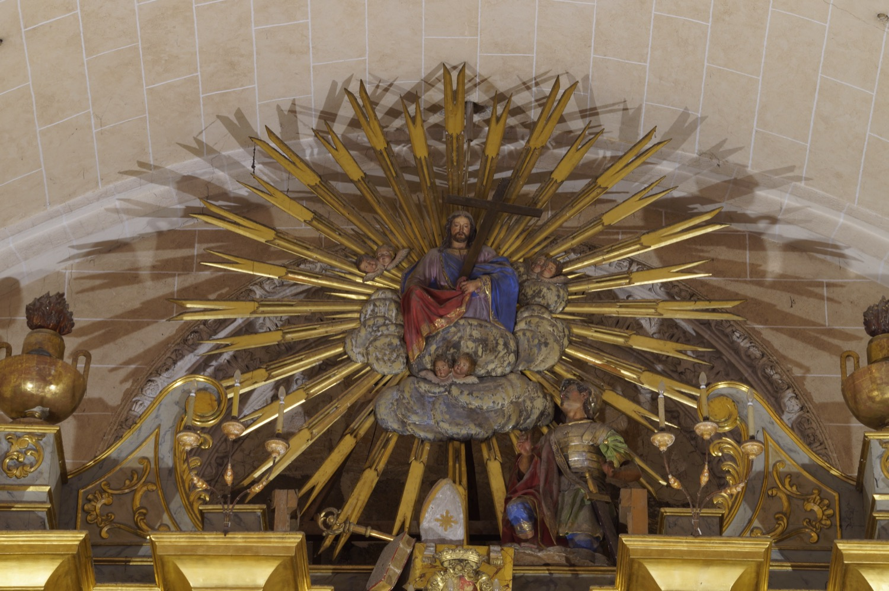

Sant Martí (316-397) va ser bisbe de Tours i un dels sants amb més devoció durant l'edat mitjana. Des dels 15 anys serví a l'exercit romà fins que, segons la llegenda, un dia es compadí d'un captaire que tremolava de fred, xapà la seva capa militar i n'hi donà la meitat. Aquella nit se li aparegué Jesús en somnis portant la mitja capa del captaire i dient als àngels que Martí l'havia vestit. En despertar, la capa tornava a ser sencera. Arran d'aquesta visió decidí rebre el baptisme i poc després deixà l’exèrcit.
Va ser molt popular arreu de França per la seva predicació en zones rurals i pels seus exorcismes. Animat per sant Hilari de Poitiers, fundà a Ligugé un dels primers monestirs d'Occident, on visqué fins que va ser elegit bisbe de Tours per aclamació popular. Després d'aquest nomenament no s'apoltronà, sinó que continuà amb la seva activitat evangelitzadora. Se li atribuiren molts miracles, per la qual cosa va ser un dels sants més populars de l'edat mitjana, com testimonia la gran quantitat de llocs que duen el seu nom, entre ells la possessió de Sant Martí, on es fundà Vilafranca de Bonany.
Aquesta escultura representa l'aparició en somnis de Jesús a sant Martí. El sant hi apareix agenollat davant Jesucrist, vestit de soldat romà, amb armadura, espasa i la meitat de la capa vermella que compartí amb el captaire. Jesús hi apareix radiant, rodejat d'angelets, i sostenint una creu i l'altra meitat de la capa. Completen el conjunt una mitra i un bàcul dipositats en terra, atributs propis de sant Martí com a bisbe de Tours. Aquests elements sobreviuen d'una escultura anterior de sant Martí a cavall que coronava aquest retaule i que s'ha perdut.